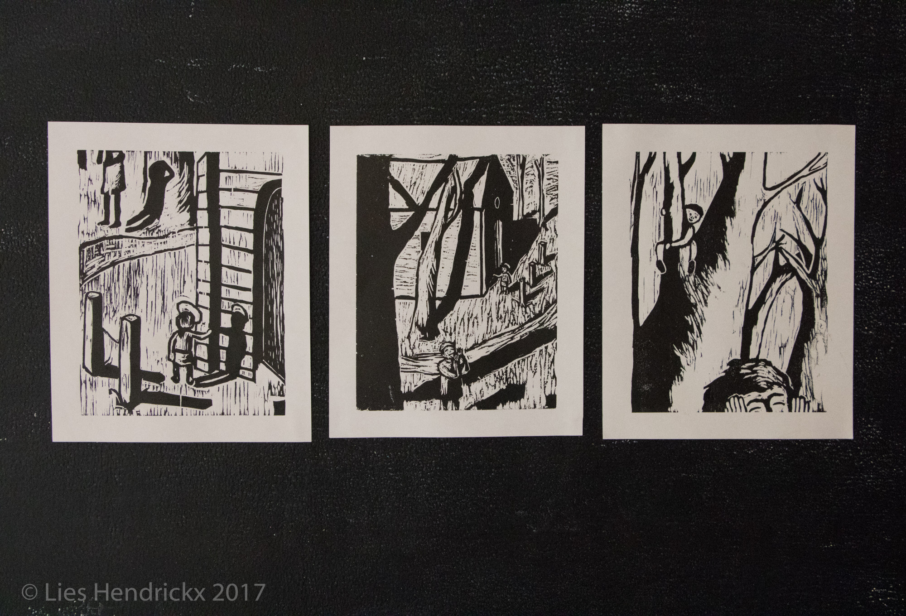

Houtsneden
Een axident
2017
how to create your own website for free
Deze serie houtsnedes zijn gebaseerd op een 'ongelukkig' voorval. In dit geval gaat het meer om de nieuwgierigheid van de kleuter Jezuske die buiten komt kijken wat er langs zijn kapelletje allemaal gebeurt.
